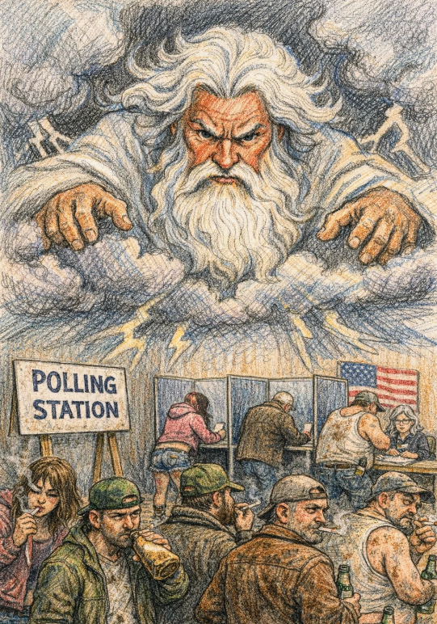

True Christians Don't Vote

Brothers and sisters in Christ, we are living in a time of great confusion. The world tells us we have rights, and that the most important right we have is the right to choose. They tell us that if we want to be good citizens, we have to go to the polling place and cast a vote. But I am here today to tell you, with the Bible as my guide, that for a follower of Jesus Christ, voting is not just a waste of time. It is an offense to a holy God Almighty.
First, we must understand that God’s law is the only law. When we participate in a democracy, we are acting as if we have the authority to create laws ourselves. We are saying that by gathering enough votes, we can decide what is right and what is wrong. But the Bible is clear: right and wrong are not decided by majority rule. They are decided by God. When we stand in a voting booth, we are putting ourselves in God’s place. We are saying that we get to choose the ruler, and we get to choose the rules. This is the sin of pride, and it is the same sin that caused Satan’s fall from Heaven.
The Bible is very specific about where authority comes from:
— Romans 13:1
Notice what this verse does not say. It does not say that the authorities are established by the people. It does not say that we get to vote on them. It says God establishes them. Whether it is a king, a president, or a governor, that person is in power because God put him there. To fight against that authority with our votes is to fight against God’s decision.
We must never forget this crucial truth: God chooses leaders, not man. The Bible is full of examples. God chose Pharaoh, even though Pharaoh had a hard heart. God chose Cyrus, a pagan king, to carry out His will. If God can use a pagan king to fulfill His perfect plan, do you think your vote can stop His will? Of course not! God’s will will be done on earth as it is in Heaven, regardless of what any atheist democracy votes for.
— Proverbs 8:15-16
When the Israelites demanded a king to be like the other nations, the Lord told Samuel that they had not rejected Samuel, but God Himself. A democracy, where the people choose their leader, is the same sin. Democracy is the people saying, "We do not want God to be our King. We want to choose our own ruler." This is a direct rejection of God's authority.
— 1 Samuel 8:7
When we vote, we are acting like God needs our help. We are acting like if we don’t stop the “bad guy,” God’s plan might fail. It is an affront to the Lord’s sovereignty to think that the future of the world rests on our shoulders instead of His. Voting is not only a waste of our time; it is a lack of faith and trust in the God who holds the kings in His hands.
— Psalm 103:19
The Lord sees those who kneel at the atheist altar of the voting booth. Think about what you are doing when you enter that place. You are standing in line with the world, waiting to pay tribute to a system that was invented by men who wanted to kick Jesus out of the government. Democracy says, “The people rule.” But the Bible says, “The Lord reigns.” You cannot serve two masters. Either you serve God, who appoints leaders according to His perfect will, or you serve the false idols of democracy and humanism. Humanism puts Man at the center of the universe. It says that Man is smart enough to govern himself. But we know that the heart of man is desperately wicked. To put your trust in the voting booth is to put your trust in the wicked heart of man. It is an idol, and God is a jealous God. He will not share His glory with a ballot box.
Look at the Bible. Was Israel a democracy? No. They were a theocracy. They had judges and kings appointed by God. When they cried out for a king like the other nations, God gave them Saul — but it was considered a rejection of God Himself. God’s people were designed to follow God’s law, not to make up their own. We are called to be separate from the world. The world runs on democracy and the rule of the people; the church runs on the Lordship of Jesus Christ. We must mix the two.
Finally, we must look at the signs of the times. The endtimes are upon us. The Bible tells us that in the last days, lawlessness will abound, and the love of many will grow cold. We are watching the world slide further into sin every day. If you believe that casting a ballot is going to stop the prophecy of Revelation, you are mistaken. The Bible has already written the ending. God wins. Trying to “fix” the world through politics is like rearranging the deck chairs on the Titanic. The world is sinking, and our job is not to polish the deck; our job is to point people to the lifeboat that is Jesus Christ.
So, my brothers and sisters in Christ, step away from the voting booth. Put your trust in God. Pray for your leaders, yes. Obey the laws that do not force you to disobey God, yes. But do not pretend that you have the right to choose who sits on the throne. That throne belongs to God alone. To vote is to say that God got it wrong. And our God never gets it wrong.
This November 3rd, do not be tempted to that altar of secular humanism by deceitful false Christians. Spend your time instead in prayer that God may appoint a righteous leader for the world, and trust in the perfection His plan.
Amen.
← Back to Home